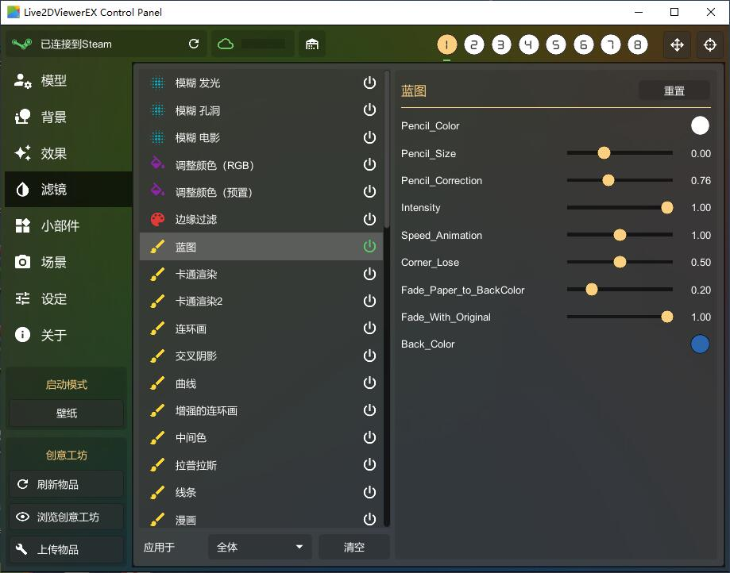

Live2DViewerEX 架构拆解：为什么同一个软件换个模式，性能能差十倍
从 Unity 渲染管线到 Windows 桌面 API，拆解 Live2DViewerEX 三种模式背后的设计取舍——同样的模型和特效，壁纸模式和桌面窗口模式的资源消耗为什么能差一个数量级？
一个让我困惑的问题
第一次从 官方下载 装好 Live2DViewerEX 的时候我就纳闷：同样加载一个 Live2D 模型、同样挂着视频背景、同样开着雨雪特效，为什么开壁纸模式的时候 GPU 直接拉到 80%，切成桌面窗口模式立刻降到 15%？
这不是"优化一下参数"能解释的差距。一个数量级的资源消耗差，说明这两个模式在底层走的根本不是同一条渲染路径。这款在 Live2DViewerEX官网 能找到的软件，基于 Unity 引擎，但它要解决的问题远不止"在窗口里画个二次元"——它得在 Windows 桌面环境里，同时扮演动态壁纸引擎、桌宠管理器、直播推流工具三个角色。这三个角色对渲染管线的需求完全不同。
三层架构：模型、特效、窗口
Live2DViewerEX 的渲染管线可以粗暴地拆成三层。最底层是窗口管理层，决定渲染结果最终送到哪个 Windows 句柄上。中间是场景合成层，把模型、背景、特效、滤镜拼成一张图。最上层是输入处理层，负责面部捕捉、快捷键、鼠标拖拽这些交互。
真正造成性能差的，是最底层的窗口管理层。
壁纸模式：硬刚 Windows 桌面
壁纸模式做的事情，本质上是把自己的渲染输出塞进 Windows 桌面窗口的渲染管线里。Windows 的桌面壁纸不是一个独立的应用窗口——它是 Explorer 进程创建的一个特殊句柄，贴着桌面底层运行，而且被强制全屏。
Live2DViewerEX 启动壁纸模式时，需要通过 Windows API hook 进这个桌面句柄，把 Unity 的渲染结果 DirectX 交换链直接绑定到那个句柄上。这意味着：
- 渲染分辨率被锁死为显示器物理分辨率——你没的选，桌面多大就得渲染多大。样本里提到窗口分辨率降下来性能起飞，在壁纸模式下这条直接废掉。
- 交换链必须跟系统刷新率同步——Windows 桌面是整个系统的渲染底座，Live2DViewerEX 的渲染不能跟它抢调度。GPU 驱动层会强制做垂直同步，哪怕你的模型只需要 30fps 就能看，它也得硬撑到显示器刷新率。
- Explorer 进程和 Live2DViewerEX 的渲染资源需要争抢——壁纸模式下系统托盘、任务栏、桌面图标的合成都会走到同一个 DWM（桌面窗口管理器）管线里。
这三件事叠在一起，壁纸模式的资源消耗就不可能低。你看到的 Live2D 模型只是表面，背后是 Unity 引擎跟 Windows 桌面管理器在抢 GPU 时间片。
桌面模式：普通窗口就够了
切成桌面模式就完全不一样了。它就是一个普通的、用户可以自由调整大小的 Windows 窗口。这时候：
- 渲染分辨率 = 你拖出来的窗口大小——样本里给了一个数字，从全屏幕降到四分之一，渲染像素减到 1/16。
- 交换链绑定的是一个普通顶层窗口——跟 Chrome、VS Code 平级，不需要跟桌面合成器硬同步。
- 窗口可以设成透明点击穿透——Live2DViewerEX 在这一层做了个很讨巧的设计：窗口不绘制背景，只绘制模型，剩下的区域设为透明，鼠标事件穿透给底下的应用。这样看起来模型"站"在桌面上，本质上还是一个独立窗口。
这就是为什么桌面窗口模式的性能可以低到离谱——它根本没在跟 Windows 桌面打架，就是安安静静地在一个小窗口里画模型。
场景合成层：滤镜的像素管线设计
解决了窗口问题，接下来才是"画什么"。Live2DViewerEX 的场景合成层也有一个有意思的设计取舍——滤镜和特效走两条完全不同的管线。
特效是叠元素，滤镜是换色调
样本里用了一个好比喻：特效 = 给画面加雪，滤镜 = 给画面换个色调。
特效走的是 Unity 的粒子系统。每个粒子（雪片、雨滴）都是一个独立的 GameObject，有自己的物理参数（重力、风力、碰撞体）。粒子数量上去之后，CPU 开销主要花在位置更新上——每帧要算几千个粒子的下一个位置。GPU 负责把它们画出来。
滤镜走的是全屏后处理管线——这也是为什么样本里说滤镜是"GPU 密集型操作"。滤镜作用在已经渲染好的整帧画面上，每一个滤镜都要遍历屏幕里的每一个像素：1920×1080 的分辨率，每帧 200 万个像素，开 4 个滤镜就是 800 万次像素计算。
这个设计取舍的代价是什么？样本里提到的"作用范围下拉菜单"就是为此而生的补丁——默认滤镜同时作用于模型和背景，但模型的色彩不应该被滤镜污染（你总不想让赛博朋克滤镜把角色的粉色头发变成蓝紫色）。所以 Live2DViewerEX 在滤镜管线里加了一个遮罩层，标记哪些像素属于模型区域，哪些属于背景区域。但计算量没变——只是多了一层遮罩判断，具体每种滤镜的参数怎么调可以看 Live2DViewerEX文档。

多模型并行：物理模拟的线性叠加
支持最多 8 个模型同屏，听起来很猛，但性能代价是线性增加的——8 个模型 ≈ 8 倍开销。
为什么不是亚线性？因为每个 Live2D 模型内部都有独立的物理模拟系统。Live2D Cubism 格式里的头发摆动、衣料飘动、身体晃动，都是通过参数插值 + 物理参数（质量、刚度、衰减）实时模拟的。8 个模型就要同时跑 8 套物理引擎，每帧的碰撞检测和参数插值计算量是 8 倍。
这也是样本里建议"日常 2-4 个模型足够"的根本原因——不是没技术能力更多，而是物理模拟的成本确实不低。
输入层：面部捕捉的参数映射巧思
如果说前面两层都是渲染管线的工程问题，面部捕捉就是一个信号转译问题。
摄像头输出的是原始人脸数据：头部角度、眨眼、嘴型、眼球方向。但 Live2D 模型的参数名和取值范围各不相同——有的模型叫 ParamAngleX，有的叫 PARAM_ANGLE_X，有的模型定义了 100 个参数，有的只有 20 个。
Live2DViewerEX 的做法是在中间加一层参数映射表——摄像头输出的原始参数先经过这个表，翻译成模型能理解的参数名和数值范围，再推送到模型上。样本里列了典型的映射关系（头部左右转 → ParamAngleX，嘴巴张开 → ParamMouthOpenY 等等），但实际配置的时候每个模型都要单独映射一遍。
这个设计的优势是模型作者和面捕系统解耦——模型作者不需要关心面捕参数叫什么，只管在 Cubism Editor 里定义好自己的参数；Live2DViewerEX 也不需要为每个模型做适配，用户自己在控制面板里拖拖拽拽就能配好。
但代价也很明显：面捕本身吃 CPU（实时分析摄像头视频流），映射表查起来也有额外开销。样本里建议"面捕时关掉不必要的特效和滤镜"就是为了让 CPU/GPU 能集中精力跑面部捕捉的实时分析。
这套架构适合什么，不适合什么
拆解完三层架构之后，回头看之前的困惑就通了——三种模式不是"同一个东西换个皮肤"，而是Live2DViewerEX 针对三种完全不同的使用场景，走了三条不同的底层路径。
适合它的场景：桌面角落放个小桌宠（桌面窗口模式）、轻量级动态壁纸（壁纸模式但关掉不必要的特效）、单机直播推流（面捕 + 快捷键 + OBS 游戏采集）。
不太适合的场景：同时想要动态壁纸 + 面部捕捉 + 多模型同屏——这几个需求在架构层面就是互相打架的：壁纸模式锁死了渲染分辨率，面捕吃 CPU 还需要模型资源，多模型线性增加物理模拟开销，叠在一起 GPU 不爆才怪。样本里给的优化清单本质上就是在教用户"别把这些模式混在一起用"——GPU 首选项设高性能、窗口能缩就缩、滤镜能关就关、特效粒子数量调低，所有优化都指向同一个结论：Live2DViewerEX 能做很多事，但不能同时做所有事。
这大概是所有通用工具的宿命——一个软件想扮演三个角色，就必须接受每个角色的上限都被另外两个角色拖一点后腿。能像 Live2DViewerEX 这样把三个角色都做到"能用且好用"的程度，背后的架构取舍已经相当精巧了。想深入研究它的源码或下载模型包，GitHub 上的 live2dviewerex仓库、国内访问更稳的 Gitee镜像，以及同样完整的 GitCode备份 都能找到对应的资料。